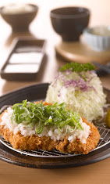
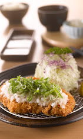

Tempura Review
 


Food
The tempura was expertly fried to a golden crisp, with a light batter that complemented the freshness of the seafood and vegetables. Each bite was perfectly seasoned, showcasing the skill of the chef in balancing flavors and textures.
Cleanliness
The cleanliness of the restaurant was impressive, with spotless tables and well-maintained utensils. The environment was meticulously kept, ensuring a hygienic dining experience that added to the overall enjoyment of the meal.
Ambiance
The ambiance of the restaurant was inviting and relaxing, with a traditional Japanese decor that created a serene atmosphere. Soft lighting and soothing music enhanced the dining experience, making it a pleasant place to enjoy tempura.
Price
The price of the tempura was fair given the high quality and generous portions. It offered good value for a premium dish, making it an accessible choice for those looking to indulge in authentic Japanese cuisine.
Comments